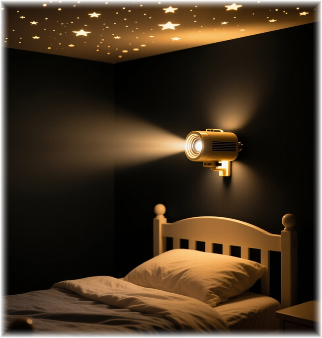
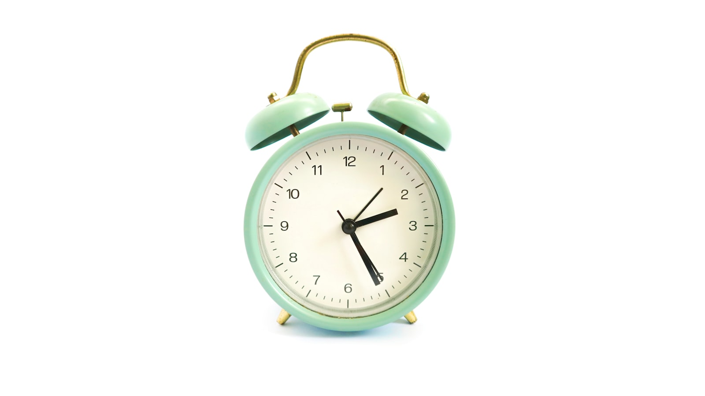

Uşaq Enurezi

amillərlə bağlı vəziyyət. Kompleks diaqnostika və müalicə.
Gecə Enurezi və ya BMGE Nədir?
BMGE dəqiq diaqnostikası, digər enurez növlərdən ayırd edilməsi — müalicənin ən düzgün başlanğıcıdır.
Birincil Monosimptomatik Gecə Enurezi (BMGE)
Uşaqda ən azı 2 həftə sabit «quru gecələr» olmamışdır. Bu arada maye qəbuluna məhdudiyyət olduqda — bu nəticə hesab edilmir. Gün ərzində ayıq olduqda sidik qaçırma olmur. Yalnız yuxuda sidik qaçırma baş verir. Diaqnoz 5 yaşdan etibarən qoyulur — bu yaşa kimi gecə qaçırması ilə bağlı uşağa yalnız özünə nəzarət qaydaları izah edilir.
Heç bir «toka vermə», «ot dəmləmə», «belini massaj etmə», akkupunktura və digər əsassız metodlar — yuxudan oyanmaya təsir etmədiyindən — BMGE müalicəsində effektivliyini təsdiqləməyib. Ona baxmayaraq bir çox valideyn ilk bunları sınayır; sabit nəticə olmadığı üçün sonradan heç bir mütəxəssisə etibar etmir.
XBT-10 F98.0
Bəs Niyə Keçmir?
Əsas səbəb uşaqda yuxunun dərinlik dərəcəsidir. Dərin yuxuda olarkən ayılma siqnalının uşağı oyatmağa gücü çatmır — ona görə də zamanında yuxudan durma refleksi (vərdişi) formalaşmır. Bu bioloji xüsusiyyətdir, tənbəllik, xəstəlik ya da «pis valideynlik» deyil. İrsi komponent var — valideynlərdə yuxu dərindirsə uşaqda ehtimal 75%-ə qalxır.
XBT-10 F98.0 — psixoloji inkişaf pozuntuları bölməsidir. Bu o deməkdir ki, sahə mütəxəssisi psixoterapevt və ya klinik psixoloq — nə nevroloq, nə də uroloq.
Nevroloji (G.) və ya uroloji (R.) enurez ayrıca kateqoriyadır — bu xəstəliklərdə gündüz də, ayıq olarkən də sidik qaçırma müşahidə olunur. BMGE yalnız yuxu zamanı baş verir. Digər orqanlarda heç bir patologiya aşkar edilmir.
İmipramin (Melipramin) Verilməlidir?
Qısa cavab: XEYİR — enurezin birinci xətt müalicəsində yeri yoxdur.
Qeyri-profil Mütəxəssis Nə Edir?
Bəzi nevroloqlar XBT-10 F98.0 diaqnozu ilə gələn uşaqlara imipramin (melipramin) — trisiklik antidepressant — yazır. Bu preparat sidik ləngiməsinin müvəqqəti effektini verir, lakin enurezin mexanizmini — oyatma refleksini — formalaşdırmır. Dərman kəsildikdə enurez ~60% hallarda geri qayıdır (residiv).
FDA-nın (Amerika Qida və Dərman Administrasiyası) imipramin üçün Qara Qutu Xəbərdarlığı (Black Box Warning) mövcuddur — uşaq və yeniyetmələrdə intihar riski. Əlavə olaraq kardiotoksik (ürəyə zərərli) təsiri var. Tibbi ədəbiyyatda enurez müalicəsi zamanı imipramin qəbulu fonunda uşaqlarda ürək dayanması nəticəsindəki ölüm halları qeyd edilmişdir.
İmipraminin enurez müalicəsində istifadəsi 1960-cı illərdə başlanıb. O dövrdən bəri beynəlxalq tibbi təşkilatlar (WHO, ICCS, NICE, EAU/ESPU, AUA, ICS) protokollarını yeniləyib — imipramin birinci xətt müalicəsindən çıxarılıb. Lakin bəzi mütəxəssislər bu yeniliklərə əməl etmir.
Müalicədən Əvvəl Nə İstisna Edilir?
Psixoterapevt həkim ikincili enurezi — başqa xəstəlik nəticəsini — mütləq istisna edir. Bunlar BMGE deyil.
Üzvi səbəblər istisna edildikdən sonra BMGE diaqnozu təsdiqlənir və müalicəyə başlanır. Əlaqəli mütəxəssisə yönləndirmə psixoterapevt həkimin göstərişi ilə aparılır.
Açıqlıq, Məntiq, Sübut
Biz heç nəyi gizlətmirik. Metodologiya, nəticələr, hətta tədris materialları da açıqdır.
Yoxlayın, müqayisə edin
İstifadə etdiyimiz protokol WHO, ICCS, NICE, EAU/ESPU tərəfindən tövsiyə olunur. Heç bir psixotrop dərman istifadə etmirik. Yalnız elmi və təsdiqlənmiş metodlara əsaslanır, ciddi mənbələrə istinad edirik — bu səhifənin aşağısında siyahı var.
Metodologiya tam açıqdır
Protokolları və materialları açıq şəkildə təqdim edirik. Biz istəyirik ki, valideynlər hətta mütəxəssisə müraciət etməzdən əvvəl hər şeyi dəqiq görsün.
Sosial Məsuliyyət
Şəhid, Qazi, Müharibə Veteranı və İştirakçısı, eləcə də təsdiqlənmiş aztəminatlı və ya əlil valideynlərin övladlarının müalicəsi — tam ödənişsiz. Yalnız 2025-ci ildə 250-dən çox uşaq müalicə alıb — 100-dən çoxu tam ödənişsiz.
Instagram — Aktuallar
Mütəxəssis olmayan adamların əlindən uşaqlarınızı qoruyun
Instagram səhifəmizdə xüsusi aktual bölmələr — SİDİK QAÇIRMA və ENUREZ. Yanlış müalicə üsulları, əlamətlər, valideyn sualları, real keyslərin izahı. Baxın, paylaşın — bu informasiya pulsuz olmalıdır.
SİDİK QAÇIRMA ENUREZ
Instagram →Birincidən Üçüncü Xəttə
Beynəlxalq protokola (ICCS 2020, NICE, EAU/ESPU 2019) uyğun addım-addım müalicə sxemi.
Birinci Xətt — Əsas Metod
Davranış Alarm Terapiyası (Gecə Məşqləri)
Alt paltarda və ya çarşabda sensorlu cihaz → sidik ifrazının ilk damcısında siqnal işləyir → uşaq çətin oyanır → valideyn təlimata uyğun təcili oyadır → tualetə gedir → yuxudan oyanma refleksi formalaşır. Effektivlik: 80% sabit nəticə. Kurs: 8–12 həftə davam edir. Residiv əhəmiyyətli dərəcədə az. Valideyn fəal iştirak etməlidir.
ICCS 2020 · NICE · Cochrane 2005 — seçim metodu
Paralelcə — Mütləq
Hissiyətin Artırılması (Gündüz Məşqləri)
Bezləri çıxarmaq (refleksin formalaşmasını bloklayır) · Quru/nəm gecələrin gündəliyi · Kiçik çanaq əzələlərinin, eləcə də sidik yollarının hər bir mərhələsinə aid müalicənin gedişatına uyğun dəstəkləyici məşqlər · hissiyət və iradənin gündəlik gücləndirilməsi · Utandırma — tamamilə qadağan (proqnozu pisləşdirdiyi sübut edilib, Cochrane Review 2005).
Alarm terapiyası ilə birlikdə effekti artırır
Paralelcə — Mütləq
Motivasiya — Uşağın Öz İstəyini Gücləndirmək
Motivasiya məşqləri mütləqdir — uşağın öz həvəsi olmalıdır, əks halda bütün tapşırıqları həvəssiz yerinə yetirəcək, hətta etiraz edərək imtina da edə bilər. Bu səbəbdən 5–8 yaş ən effektiv mərhələ hesab edilir. Uşaqda bu mövzu ilə bağlı travma olduqda inam zəifləyir, yuxudan oyandıqda sabotaj baş verə bilər. Gedişata uyğun mütəxəssis hər mərhələdə fərqli motivasiya tədbiri tətbiq edir.
Alarm terapiyası ilə birlikdə effekti artırır
Üçüncü Xətt — Davranış Terapiyası Effektiv Olmadıqda
Kombinasiya: Alarm Terapiya + Dərmanlar
Davranış terapiyası 12 həftə ərzində effektiv olmadıqda, növbəti mərhələdə 2 istiqamətli müalicə davam edir — yuxunun dərinliyini nəzərə alaraq yalnız ciddi kardioloji nəzarət altında istisnai hallarda psixotrop preparatların təyini nəzərə alına bilər. Bu siyahıda mayenin həcmi də çox olduqda endokrinoloji müayinə ilə sübut olduqdan sonra desmopressin və ya digər analoqları təyin edilə bilər (Vande Walle et al., 2012).
! İmipramin və Amitriptilin — 2012-ci ildən etibarən kardiotoksik təsiri və ölüm halları ilə yanaşı çoxsaylı yan təsirləri olduğu üçün ÜST tərəfindən istifadəsi tövsiyə edilmir
Yekun Sxem
1
Psixoterapevtlə məsləhət — ikincili enurezin istisna edilməsi, diaqnozun təsdiqlənməsi
2
İntensiv Alarm + Davranış terapiyası — 8–12 həftə ərzində həyata keçirilir
3
Nətinə olmadıqda — Alarm terapiya + Xüsusi müalicə kombinasiyası
4
Effektin olmaması — təkrar diaqnostika, diaqnozun yenidən nəzərdən keçirilməsi
Elmi Mənbələr
Glazener C.M., Evans J.H., Peto R.E. Alarm interventions for nocturnal enuresis in children. Cochrane Database Syst Rev. 2005 — alarm-terapiya uzunmüddətli nəticələrə görə bütün digər müdaxilələri üstələyir; BMGE-də seçim metodudur.
Glazener C.M., Evans J.H. Tricyclic and related drugs for nocturnal enuresis in children. Cochrane Review, 2000 — trisiklik antidepressantlar qısamüddətli effekt verir, kardiotoksiklik daxil olmaqla ciddi yan təsirləri var, ləğvdən sonra yüksək residiv.
Vande Walle J., Rittig S., Bauer S. et al. Practical consensus guidelines for the management of enuresis. Eur J Pediatr. 2012 Jun — imipramin enurezin müalicəsindəki son seçim olmalıdır.
Radmayr C., Bogaert G., Dogan H.S. et al. EAU/ESPU Paediatric Urology Guidelines. 2019 — BMGE-nin differensial diaqnostikası və müalicə protokolu.
NICE Guideline: Nocturnal Enuresis — The Management of Bedwetting in Children and Young People. National Institute for Health and Care Excellence, UK — alarm 5 yaşdan yuxarı uşaqlar üçün birinci xətt terapiya.
ICCS (International Children's Continence Society) Guidelines. 2020 — alarm — farmakoloji müdaxilə olmadan davamlı remissiya verən yeganə metoddur; imipramin tövsiyə edilən protokollara daxil deyil.
MacLean R.E.G. Imipramine Hydrochloride (Tofranil) and Enuresis. Amer J Psychiat 117:551, 1960 · Epstein S.J. Imipramine in the Control of Enuresis. Arch Pediatr, 1965 — tarixi kontekst; o dövrdən bəri beynəlxalq protokollar kökündən dəyişib.
WHO, MXK-10, F98.0 Nonorganic enuresis. Davranış və emosional pozuntular bölməsi — profil mütəxəssis psixoterapevt/uşaq psixiatrıdır.
Müalicənin Dəyəri
Müalicə kursu — 3 ay üçün 500 AZN; davam etmək zərurəti yaranarsa, əlavə 100 AZN. Kursu BirBank vasitəsilə 18 aya qədər hissə-hissə ödəmək mümkündür.
Alarm cihazı + metodologiya + 3 ay ərzində dəstək
Müalicə 3 aydan sonra davam etdirilərsə
Təsdiqedici sənəd əsasında — tam ödənişsiz
Aylıq ödəniş
Aylıq ödəniş
Aylıq ödəniş
Gecə Enurezi Haqqında Məqalələr
Gecə enurezinin səbəbləri, alarm metodu və valideynlər üçün praktik addımlar barədə elmi yazılar
- Məqalə · 8 dəq oxuma Uşağınız Gecələr Yatağı Isladırsa — 5 Yanlış İnanc ›
- Məqalə · 9 dəq oxuma BMGE — Birincili Monosimptomatik Gecə Enurezi: Tam Bələdçi ›
-

Məqalə · 7 dəq oxuma Alarm Cihazı Necə İşləyir? — Beynəlxalq Protokol › - Məqalə · 7 dəq oxuma Desmopressin və İmipramin — Enurezdə Dərmanlar ›
- Məqalə · 7 dəq oxuma Valideynlər Üçün 7 Praktik Məsləhət ›
Müraciət Formu
Formu doldurun — 24 saat ərzində koordinator sizinlə əlaqə saxlayır.
Müraciət
Formu doldurun, uşağın yaşını yazın
Zəng
24 saat ərzində koordinator əlaqə saxlayır
İlkin görüş
Qiymətləndirmə, diaqnozun təsdiqi
Kurs başlayır
Alarm cihazı + instruksiya — evdə müalicə
Uşaqları Sağalanmış Valideynlər Yazır
Rəylər yalnız admin təsdiqi sonrası dərc edilir — spam və kənar reklam yoxdur.
Aynur V. — Bakı
«Oğlum 9 yaşında idi, 4 ildir əziyyət çəkirdi. 10 həftəyə tam sağaldı. Cihaz işləyir, doktor izah edir. Dərman olmadan belə nəticə görmüşdüm ki deyərdim yalan. Amma özüm gözümüzlə gördüm.»
2025 · 10 həftəlik kurs
Rauf M. — Sumqayıt
«Psixiatrlara getdik, hər biri dərman yazdı. Kənan bəy dərman vermədi — sadəcə cihaz və metodologiya. 3 ayda uşağımız tam quruydu. Sadəcə təşəkkür edə bilərik.»
2024 · 12 həftəlik kurs
Sevinc H. — Gəncə
«Online görüşlər ilə müalicə etdilər. Bakıya gəlmədik. Həftəlik hesabatları göndərirdik, hər sual cavablandırıldı. Qızım 8 həftəyə sağaldı. Çox şadıq.»
2025 · 8 həftəlik kurs · online
Fərid K. — Bakı
«Aztəminatlı ailəyik, qısa zamanda pulsuz kömək etdilər. Bu insanlığı xatırladıb. Uşağımız 11 həftəyə tam sağaldı. Allah razı olsun.»
2025 · Pulsuz kurs · 11 həftə
Mövzuya Aid Məqalələr
Dr. Kənan Rəhimovun enurez mövzusunda yazdığı məqalələr.
Uşağınız Gecələr Yatağı Isladırsa — 5 Yanlış İnanc
Uşaqlarda gecə enurezi haqqında ən çox yayılmış 5 yanlış inanc və psixoloji müalicənin düzgün yolu.
Yeniyetməniz Sizinlə Danışmırsa — Səbəb Siz Deyilsiniz
13–17 yaş arası beyin inkişafının ən intensiv dövrüdür. Valideynlər niyə «düşmən» görünür? Psixoloji izahat.